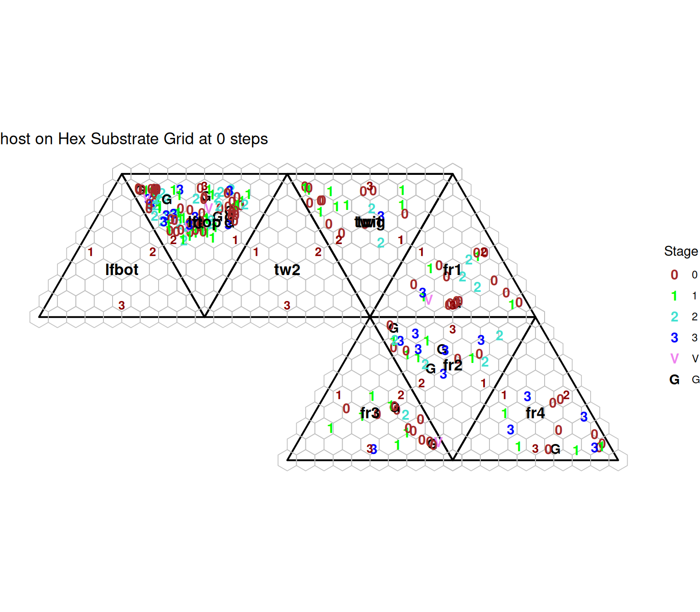

library(ewing)
library(ggplot2)
# 1. Initialize simulation and advance 100 steps
mysim <- init.simulation()Data organism.features already loaded
Initializing Temperature Profile ...
Data temperature.par already loaded
Data temperature.base already loaded
Base daily temperature fluctuation:
Temperature set for days 0 to 202
Daily low temperature range: 68 to 77
Daily high temperature range: 83 to 92
Run temp.design() to adjust temperature range
Initial active temperature:
lo.hour hi.hour
0 24
Creating simulation organism set using species:
host, parasite
Data future.host already loaded
Data substrate.host already loaded
Data future.parasite already loaded
Data host.parasite already loaded
Data substrate.parasite already loaded
Data substrate.substrate already loaded
Initialize host at size 200...
Initializing events for host with 200 individuals
Initialize parasite at size 200...
Initializing events for parasite with 200 individualsmysim <- future.events(mysim, nstep = 100, plotit = FALSE)initial: host 200: parasite 200
lo.hour hi.hour
0 48
refresh 5: host 203: parasite 200
refresh 10: host 204: parasite 200
refresh 15: host 204: parasite 200
refresh 20: host 207: parasite 200
refresh 25: host 207: parasite 200
refresh 30: host 208: parasite 200
refresh 35: host 209: parasite 200
refresh 40: host 212: parasite 200
refresh 45: host 212: parasite 200
refresh 50: host 213: parasite 200
refresh 55: host 214: parasite 200
refresh 60: host 215: parasite 200
refresh 65: host 216: parasite 200
refresh 70: host 217: parasite 200
refresh 75: host 220: parasite 200
refresh 80: host 220: parasite 200
refresh 85: host 221: parasite 200
refresh 90: host 223: parasite 200
refresh 95: host 225: parasite 200
refresh 100: host 225: parasite 200# 2. Extract host coordinates mapped to hexagonal substrate grid
host_hex <- ewing_substrate(mysim, "host", layout = "hex")
# 3. Render autoplot with hexagonal grid overlay
ggplot2::autoplot(host_hex)